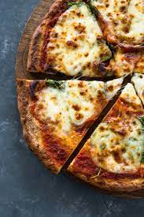

Keto Pizza

KETO PIZZA RECIPE (FATHEAD DOUGH)
Fathead pizza dough makes the BEST low carb keto pizza crust recipe: Crispy, chewy, and ready in 20 minutes! Includes options for almond flour or coconut flour.
INGREDIENTS:
- Low Carb flour
- Eggs
- Mozzarella Chesse
- Cream Cheesse
STEPS:
- Prep. Preheat the oven. Line a baking sheet or pizza pan with parchment paper. (Or for best results, preheat a pizza stone in the oven and line a pizza peel with parchment paper for preparing the keto pizza crust.)
- Mix flour and eggs. In a large bowl or in a food processor, mix the egg(s) and either almond flour or coconut flour, depending on which version you are making.
- In a medium bowl, combine the shredded mozzarella and cubed cream cheese. Microwave, stirring halfway through. Stir again at the end until well incorporated. (If you prefer not to use the microwave, melt the cheeses in a double boiler on the stove instead.)
- Combine the fathead dough. Add the melted cheeses to the flour mixture. Process in the food processor or knead with your hands (depending on the method you are using), until a uniform dough forms, with no streaks. Form the dough into a ball.
- Form or roll out the crust. Spread the dough onto the lined baking pan or pizza peel to 1/4″ or 1/3″ thickness, using your hands or a rolling pin over a piece of parchment (the rolling pin works better if you have one). Use a toothpick or fork to poke lots of holes throughout the crust to prevent bubbling.
- Bake the keto pizza crust. If using a pizza stone, slide the parchment paper from the pizza peel to the stone in the oven. If using a pan, just place the pan in the oven. Bake, then poke more holes to pop any bubbles and bake again until slightly golden.
- Add toppings. Top the crust with sauce and toppings and return to the oven, either directly on the pizza stone or directly on the oven rack (no parchment paper), until hot. If desired, place under the broiler to brown the cheese.
Make this your new go to dinner recipe!